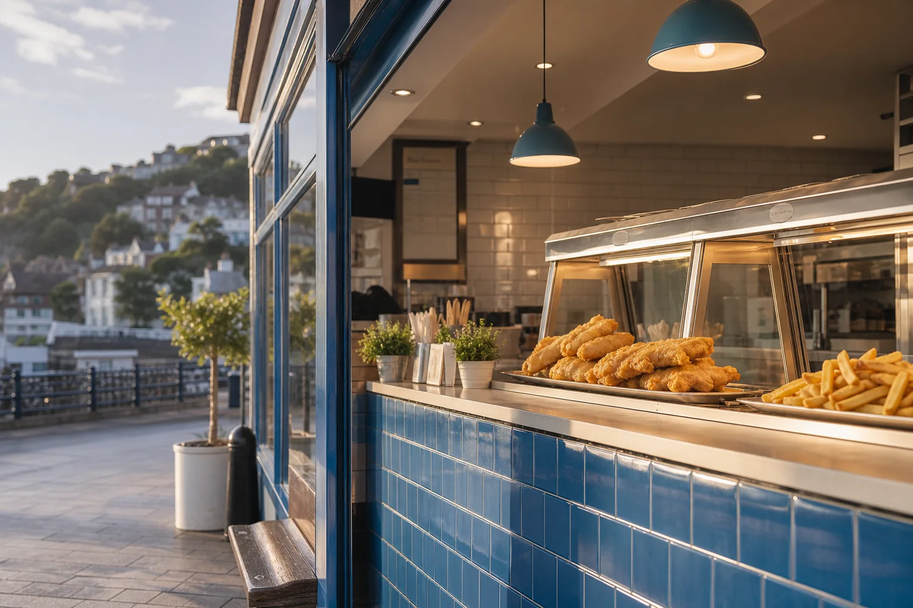
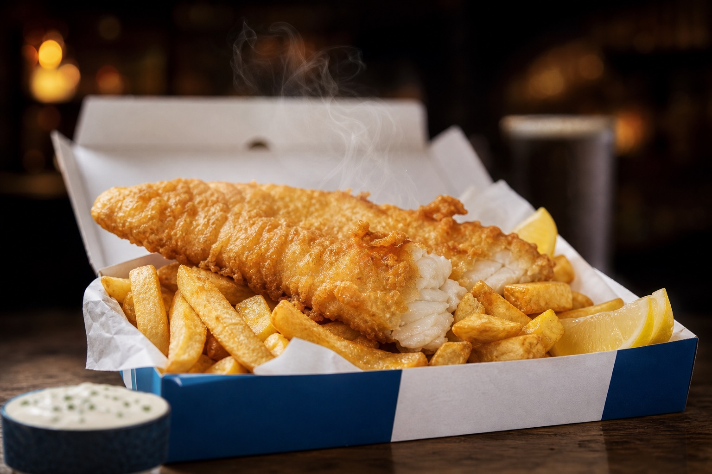
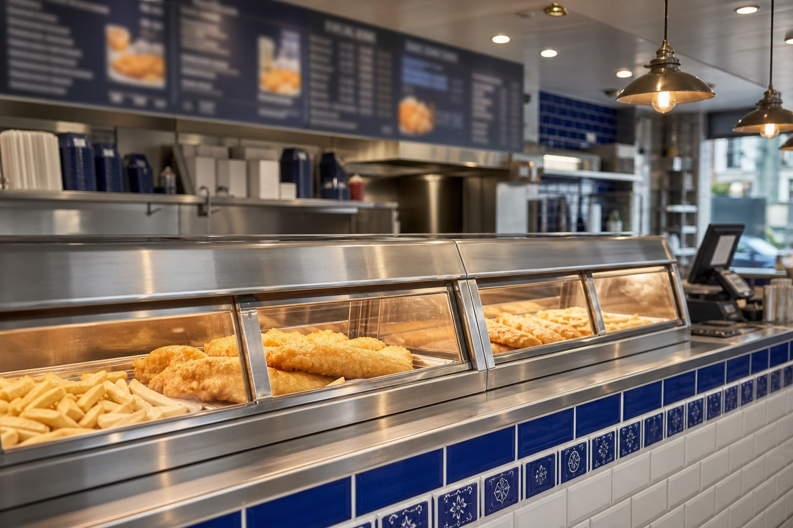
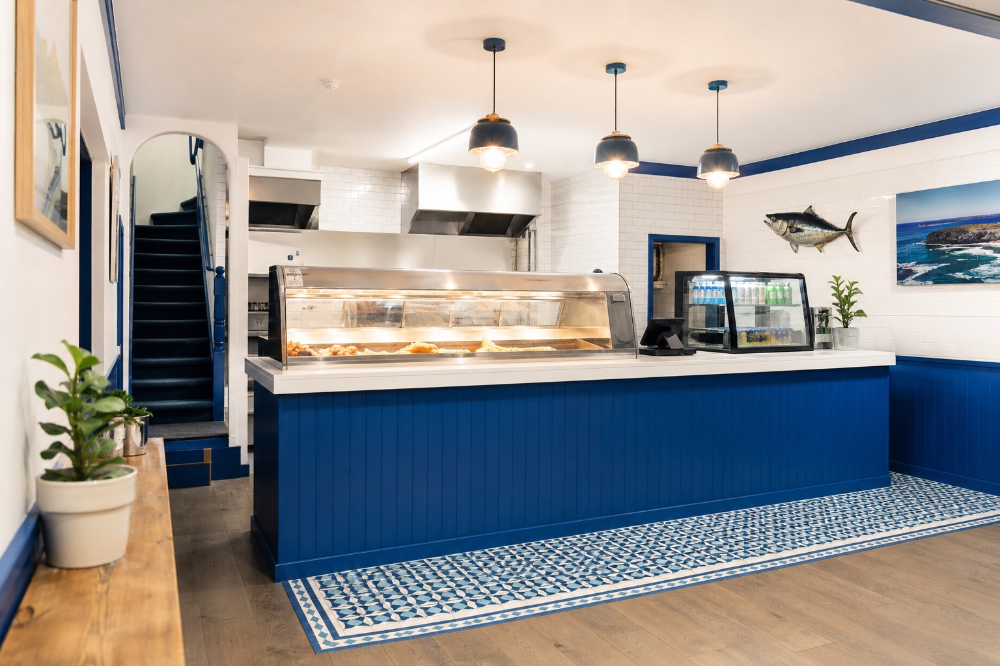

Fish & chips
Classic fried fish, hot chips, and quick takeaway ordering for the town centre.

284 Union Street · Torquay TQ2 5QZ
Fish and chips, battered chips, grilled fish, and takeaway favourites on Union Street, with the essentials ready before you set off.
The counter
After 20 years of experience at Frying Scotsman in Goodrington, the team brought battered chips into Torquay Fryer. Alongside traditional fish and chips, the public listing also highlights grilled fish and easy town-centre takeaway.
Shop photos



Food hygiene
Food Standards Agency data records Torquay Fryer as a takeaway/sandwich shop with a 5 rating, inspected on 4 June 2025. The listing address matches 284 Union Street, Torquay TQ2 5QZ.
Find us
The Torquay Fryer is listed at 284 Union Street, Torquay TQ2 5QZ. Drag or zoom the map below to preview the area, then open Google Maps for live directions.
Drag or zoom the map to preview the street. Open in Google Maps
Before you visit
Opening times and daily availability can change. Call ahead for the current counter, allergens, and any large orders.